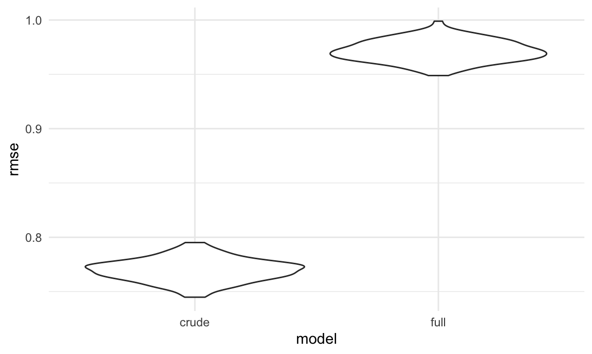

To learn more about what influences adults to obtain an influenza vaccine, we will conduct additional statistical analyses of the National Health Interview Survey data set. We will be using the tidied data from our earlier exploratory analysis.
To begin, we would like to take a better look at the distribution of the data and important variables.
flu_adult_df =
read_csv("./final_project_large_data/flu_adult_df.csv") %>%
mutate(
flu_shot = str_to_title(flu_shot),
flu_shot = as.factor(flu_shot),
race_eth =
case_when(
nh_race == "hispanic" ~ "Hispanic",
nh_race == "NH AIAN" ~ "Native or mixed race",
nh_race == "NH AIAN and other" ~ "Native or mixed race",
nh_race == "NH asian" ~ "Asian",
nh_race == "NH black" ~ "Black",
nh_race == "NH white" ~ "White",
nh_race == "multiple races" ~ "Native or mixed race"
),
last_dr_visit =
case_when(
last_drvisit == "10+ years" ~ "5+ years",
last_drvisit == "within last 10 years" ~ "5+ years",
last_drvisit == "within last 5 years" ~ "<5 years",
last_drvisit == "within last 3 years" ~ "<5 years",
last_drvisit == "within last 2 years" ~ "<2 years",
last_drvisit == "within past year" ~ "Within past year",
last_drvisit == "never" ~ "5+ years"
),
education =
case_when(
education == "12th grade, no dipolma" ~ "Less than high school",
education == "Associate degree-aca" ~ "Associate's degree",
education == "Associate degree-tech" ~ "Associate's degree",
education == "Bachelor's degree" ~ "Bachelor's degree",
education == "College, no degree" ~ "Some college",
education == "Doctoral degree" ~ "Advanced degree",
education == "GED" ~ "High school diploma/GED",
education == "Grades 1-11" ~ "Less than high school",
education == "HS graduate" ~ "High school diploma/GED",
education == "Master's degree" ~ "Advanced degree",
education == "never attended" ~ "Less than high school",
education == "Professional school" ~ "Advanced degree"
),
health = str_to_title(health),
health = as.factor(health),
insurance = str_to_title(insurance),
insurance = as.factor(insurance),
usborn = str_to_title(usborn),
usborn = as.factor(usborn),
bmi = str_to_title(bmi),
bmi = as.factor(bmi),
errands = str_to_title(errands_alone_diff),
errands = as.factor(errands),
race_eth = fct_infreq(race_eth),
health = fct_relevel(health, "Excellent", "Very Good", "Good", "Fair", "Poor"),
last_dr_visit = fct_relevel(last_dr_visit, "Within past year", "<2 years",
"<5 years", "5+ years"),
education = fct_relevel(education, "Less than high school",
"High school diploma/GED", "Some college",
"Associate's degree", "Bachelor's degree",
"Advanced degree"),
usborn = fct_relevel(usborn, "Yes", "No"),
bmi = fct_relevel(bmi, "Underweight", "Healthy Weight", "Overweight", "Obese"),
errands = fct_relevel(errands, "None", "Some", "A Lot", "Cannot Do At All")
)
label(flu_adult_df$flu_shot) = "Flu Vaccine Received"
label(flu_adult_df$age) = "Age"
label(flu_adult_df$sex) = "Sex"
label(flu_adult_df$race_eth) = "Race/Ethnicity"
label(flu_adult_df$health) = "Health Status"
label(flu_adult_df$insurance) = "Insurance Coverage"
label(flu_adult_df$bmi) = "BMI"
label(flu_adult_df$last_dr_visit) = "Last Doctor Visit"
label(flu_adult_df$education) = "Education"
label(flu_adult_df$usborn) = "US-Born"
label(flu_adult_df$errands) = "Difficulty with Errands Alone"
units(flu_adult_df$age) = "years"
units(flu_adult_df$bmi) = "kg/m^2"
table1(~ age + sex + race_eth + health + insurance + bmi +
last_dr_visit + education + usborn + errands | flu_shot,
data = flu_adult_df,
caption = "Table 1: Distribution of demographic and health-related
covariates by vaccination status.")| No (N=15549) |
Yes (N=16063) |
Overall (N=31997) |
|
|---|---|---|---|
| Age (years) | |||
| Mean (SD) | 47.1 (16.9) | 56.9 (18.5) | 52.1 (18.5) |
| Median [Min, Max] | 46.0 [18.0, 99.0] | 60.0 [18.0, 99.0] | 53.0 [18.0, 99.0] |
| Sex | |||
| Female | 7821 (50.3%) | 9225 (57.4%) | 17261 (53.9%) |
| Male | 7725 (49.7%) | 6838 (42.6%) | 14733 (46.0%) |
| Missing | 3 (0.0%) | 0 (0%) | 3 (0.0%) |
| Race/Ethnicity | |||
| White | 9974 (64.1%) | 11718 (73.0%) | 21915 (68.5%) |
| Hispanic | 2455 (15.8%) | 1633 (10.2%) | 4152 (13.0%) |
| Black | 1978 (12.7%) | 1440 (9.0%) | 3483 (10.9%) |
| Asian | 726 (4.7%) | 901 (5.6%) | 1648 (5.2%) |
| Native or mixed race | 416 (2.7%) | 371 (2.3%) | 799 (2.5%) |
| Health Status | |||
| Excellent | 3887 (25.0%) | 3285 (20.5%) | 7258 (22.7%) |
| Very Good | 5272 (33.9%) | 5393 (33.6%) | 10767 (33.7%) |
| Good | 4243 (27.3%) | 4539 (28.3%) | 8893 (27.8%) |
| Fair | 1659 (10.7%) | 2073 (12.9%) | 3783 (11.8%) |
| Poor | 480 (3.1%) | 768 (4.8%) | 1274 (4.0%) |
| Missing | 8 (0.1%) | 5 (0.0%) | 22 (0.1%) |
| Insurance Coverage | |||
| Covered | 13244 (85.2%) | 15456 (96.2%) | 29015 (90.7%) |
| Not Covered | 2260 (14.5%) | 584 (3.6%) | 2887 (9.0%) |
| Missing | 45 (0.3%) | 23 (0.1%) | 95 (0.3%) |
| BMI (kg/m^2) | |||
| Underweight | 259 (1.7%) | 249 (1.6%) | 516 (1.6%) |
| Healthy Weight | 4935 (31.7%) | 4913 (30.6%) | 9968 (31.2%) |
| Overweight | 5164 (33.2%) | 5378 (33.5%) | 10649 (33.3%) |
| Obese | 4778 (30.7%) | 5127 (31.9%) | 9997 (31.2%) |
| Missing | 413 (2.7%) | 396 (2.5%) | 867 (2.7%) |
| Last Doctor Visit | |||
| Within past year | 12218 (78.6%) | 15121 (94.1%) | 27551 (86.1%) |
| <2 years | 1553 (10.0%) | 594 (3.7%) | 2162 (6.8%) |
| <5 years | 1085 (7.0%) | 242 (1.5%) | 1339 (4.2%) |
| 5+ years | 653 (4.2%) | 89 (0.6%) | 746 (2.3%) |
| Missing | 40 (0.3%) | 17 (0.1%) | 199 (0.6%) |
| Education | |||
| Less than high school | 1538 (9.9%) | 1372 (8.5%) | 2954 (9.2%) |
| High school diploma/GED | 4406 (28.3%) | 3674 (22.9%) | 8201 (25.6%) |
| Some college | 2709 (17.4%) | 2450 (15.3%) | 5216 (16.3%) |
| Associate's degree | 2066 (13.3%) | 2065 (12.9%) | 4170 (13.0%) |
| Bachelor's degree | 3140 (20.2%) | 3728 (23.2%) | 6952 (21.7%) |
| Advanced degree | 1604 (10.3%) | 2697 (16.8%) | 4325 (13.5%) |
| Missing | 86 (0.6%) | 77 (0.5%) | 179 (0.6%) |
| US-Born | |||
| Yes | 12661 (81.4%) | 13611 (84.7%) | 26328 (82.3%) |
| No | 2630 (16.9%) | 2214 (13.8%) | 4863 (15.2%) |
| Missing | 258 (1.7%) | 238 (1.5%) | 806 (2.5%) |
| Difficulty with Errands Alone | |||
| None | 14421 (92.7%) | 14319 (89.1%) | 29061 (90.8%) |
| Some | 648 (4.2%) | 829 (5.2%) | 1499 (4.7%) |
| A Lot | 224 (1.4%) | 322 (2.0%) | 554 (1.7%) |
| Cannot Do At All | 251 (1.6%) | 591 (3.7%) | 859 (2.7%) |
| Missing | 5 (0.0%) | 2 (0.0%) | 24 (0.1%) |
To further investigate the data, we will run a logistic regression to look into what variables significantly influence the odds that an individual will obtain the flu vaccine.
We believe that health insurance coverage is an important predictor of vaccination behavior, so we will begin with that as a main effect and add other explanatory variables from there.
flu_adult_model =
flu_adult_df %>%
mutate(
flu_shot = case_when(
flu_shot == "Yes" ~ 1,
flu_shot == "No" ~ 0
)
)
logreg_crude =
glm(flu_shot ~ insurance, data = flu_adult_model, family = "binomial")
lr_crude_results =
logreg_crude %>%
broom::tidy() %>%
janitor::clean_names() %>%
mutate(
term = str_replace(term, "insurance", "Insurance Coverage: ")
) %>%
dplyr::select(-c(std_error, statistic))
lr_crude_results %>% knitr::kable(digits = 4)| term | estimate | p_value |
|---|---|---|
| (Intercept) | 0.1545 | 0 |
| Insurance Coverage: Not Covered | -1.5077 | 0 |
We can see from our crude, main effects model that adults who are not covered by health insurance have 0.22 times the odds of getting a flu vaccine compared to individuals who do have health insurance, on average. Our coefficient for the insurance term is significant in this model at a significance level of \(\alpha\) = 0.05.
To build out our model, we will include effects of patient sex, education level, race/ethnicity, health status, BMI category, recency of last doctor visit, difficulty completing errands as a measure of disability, and whether the patient is a native citizen or an immigrant.
logreg_full =
glm(flu_shot ~ insurance + age + sex + education + race_eth + health + bmi +
last_dr_visit + usborn + errands,
data = flu_adult_model, family = "binomial")
lr_full_results =
logreg_full %>%
broom::tidy() %>%
janitor::clean_names() %>%
mutate(
term = str_replace(term, "insurance", "Insurance Coverage: "),
term = str_replace(term, "education", "Education: "),
term = str_replace(term, "race_eth", "Race/Ethnicity: "),
term = str_replace(term, "health", "Health: "),
term = str_replace(term, "bmi", "BMI: "),
term = str_replace(term, "last_dr_visit", "Last Doctor Visit: "),
term = str_replace(term, "usborn", "US Born: "),
term = str_replace(term, "sex", "Sex: "),
term = str_replace(term, "^age", "Age (continuous)"),
term = str_replace(term, "errands", "Difficulty with Errands Alone: ")
) %>%
dplyr::select(-c(std_error, statistic))
lr_full_results %>% knitr::kable(digits = 4)| term | estimate | p_value |
|---|---|---|
| (Intercept) | -1.3359 | 0.0000 |
| Insurance Coverage: Not Covered | -0.8259 | 0.0000 |
| Age (continuous) | 0.0253 | 0.0000 |
| Sex: Male | -0.1877 | 0.0000 |
| Education: High school diploma/GED | -0.0610 | 0.2251 |
| Education: Some college | 0.0546 | 0.3127 |
| Education: Associate’s degree | 0.0940 | 0.0939 |
| Education: Bachelor’s degree | 0.3288 | 0.0000 |
| Education: Advanced degree | 0.5787 | 0.0000 |
| Race/Ethnicity: Hispanic | -0.0555 | 0.2080 |
| Race/Ethnicity: Black | -0.3878 | 0.0000 |
| Race/Ethnicity: Asian | 0.3450 | 0.0000 |
| Race/Ethnicity: Native or mixed race | 0.0129 | 0.8723 |
| Health: Very Good | 0.0620 | 0.0691 |
| Health: Good | 0.0599 | 0.1058 |
| Health: Fair | 0.1127 | 0.0203 |
| Health: Poor | 0.1803 | 0.0156 |
| BMI: Healthy Weight | 0.1116 | 0.2708 |
| BMI: Overweight | 0.1639 | 0.1067 |
| BMI: Obese | 0.2337 | 0.0217 |
| Last Doctor Visit: <2 years | -0.8406 | 0.0000 |
| Last Doctor Visit: <5 years | -1.2230 | 0.0000 |
| Last Doctor Visit: 5+ years | -1.7353 | 0.0000 |
| US Born: No | -0.1510 | 0.0004 |
| Difficulty with Errands Alone: Some | 0.0042 | 0.9446 |
| Difficulty with Errands Alone: A Lot | 0.0374 | 0.7050 |
| Difficulty with Errands Alone: Cannot Do At All | 0.3045 | 0.0005 |
In our full adjusted model, we see that on average, adults who are not covered by health insurance have 0.44 times the odds of getting a flu vaccine compared to individuals who do have health insurance, adjusting for multiple covariates. Our coefficient for the insurance term is significant in this model at a significance level of \(\alpha\) = 0.05.
Regarding the other variables in our model, all variables have at least one statistically significant level, so we will retain the saturated model. Some significant observations of note:
To compare the models, we will evaluate the AIC, Akaike’s Information Criterion, for each model. The model that has a smaller AIC is a better fit for the data.
aic_test =
tibble(
"Crude" = AIC(logreg_crude),
"Full" = AIC(logreg_full)
) %>%
pivot_longer(
everything(),
names_to = "Model",
values_to = "AIC"
)
aic_test %>% knitr::kable()| Model | AIC |
|---|---|
| Crude | 42507.92 |
| Full | 37489.57 |
As we can see, the full model has a smaller AIC than the crude model, meaning that it is a better fit for the data. This confirms our decision to use this as our selected model.
A popular way of comparing model fit is by using the root mean squared error (RMSE). However, this goodness of fit metric is appropriate only for linear models (modeling continuous outcomes). Because logistic regression models the odds of an outcome, which can only range from 0 to 1, RMSE does not map the same way. To illustrate this, we will apply RMSE methods to our logistic models. Remember that above, we showed that our full model is a better fit for our data using AIC. Now, we will see if that finding holds for RMSE. Using the cross validation tools in the modelr package, we will first split our data into 100 different resamples of training and testing data sets, and then will calculate RMSE for each. RMSE takes values between 0 (perfect fit) and 1 (random/no fit).
vax_cv =
crossv_mc(flu_adult_model, 100) %>%
mutate(
train = map(train, as_tibble),
test = map(test, as_tibble),
crude = map(.x = train, ~glm(flu_shot ~ insurance, data = .x,
family = "binomial")),
full = map(.x = train, ~glm(flu_shot ~ insurance + age + sex + education +
race_eth + health + bmi + last_dr_visit +
usborn + errands,
data = flu_adult_model, family = "binomial")),
rmse_crude = map2_dbl(.x = crude, .y = test, ~rmse(model = .x, data = .y)),
rmse_full = map2_dbl(.x = full, .y = test, ~rmse(model = .x, data = .y))
)
rmse_plot =
vax_cv %>%
select(starts_with("rmse")) %>%
pivot_longer(
everything(),
names_to = "model",
names_prefix = "rmse_",
values_to = "rmse"
) %>%
ggplot(aes(x = model, y = rmse)) +
geom_violin()
rmse_plot
As we can clearly see, by the RMSE metric our full model is almost no better than chance at predicting outcomes for our data, and our crude model is only slightly (~20%) better. Again, this doesn’t mean that we should throw out our models; rather, it confirms that RMSE is a poor metric for evaluating the goodness of fit for a logistic model.